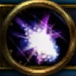
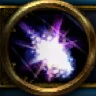

Delya
 


Last Played: ../../2019
Role Play
Is this Delya or not? You’re not sure. Delya being a shapeshifter it’s always hard to tell. The only way to get an idea is when she morphs back to her elf form… Yet, many elves look alike so it is hard to tell even then!
She’s nice, but again all elves are… so who’s to say who this really is?
Delya entered the Emerald Dream when Teldrassil was first planted. She hibernated for many years and walked amongst the purest of forms. Through the Dream she aided the other druids to nourish and look after the growth of the giant tree.
Teldrassil grew strong despite the mysterious corruption that plagued it. Delya was severely tainted by this evil and soon fell into a deeper slumber. She became one with the Dream and lost herself in its blur.
Then... the cataclysm...
The tree was in excruciating pain and cried out to a world that was being torn apart. Every druid bound to Teldrassil either died or was violently ripped out of the Dream.
Delya was one of the lucky ones.
Home: Dolanaar (55/49)
Concept
Resto:
Hair is light green. Super efficient healer, she should be your main! All about green.
Balance:
Hair is blue. All about the moon and stars. All blue. Good AoE DPSer
Lunar Festival:
Hair of the color of the dress. e.g. purple works well.
Notes
Doing the Lunar Festival achievements
Trying to get rep with "The Nightfallen" who are druids in "The Dreamgrove" (Druid class hall). They have one very nice gear set.
Trying to get Exalted with the Dreamweavers druids in Lorlathil. There is an awesome looking pair of shoulders!
Craft
Daily Cooldown Do daily Secrets of Draenor Enchanting
Daily Cooldown Do daily Temporal Crystal
Food (balance) + crit Pickled Eel or Salty Squid Roll
Food (resto) + versatility Sleeper Surprise
Enchanting: Sockets + resist Void Sphere
Enchanting: Neck + mastery Gift of Mastery
Enchanting: Ring (resto) + versatility Gift of Versatility
Enchanting: Ring (balance) + crit Breath of Critical Strike
Enchanting: Cloak + mastery + speed Gift of Mastery
Stories
Feb 2019: Going full on Lunar Festival achievements. Collecting coins from anciants around the worlds.
Jan 2019: Was doing some Lunar festival stuff.